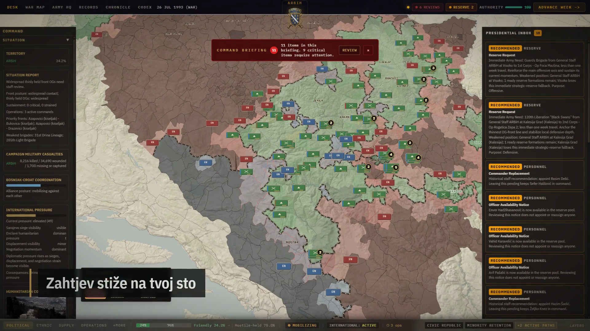

Republika Bosna i Hercegovina
Vlada radi iz rekviriranog stana u opkoljenom Sarajevu. Ima najšire formalne ovlasti, ali malo prostora za manevar kad dođe do proboja na frontu.
Političko-vojna simulacija rata u Bosni, od 1992. do 1995. Preuzmite ulogu jednog od trojice predsjednika. Kampanja traje do 188 sedmičnih poteza.
Pogledajte trejler 1:25 Mediji i izdavači
Snimci su iz beta verzije 0.9.9. Igra je u razvoju za PC.

PustiVi ste predsjednik. Odobravate zahtjeve i odlučujete o imenovanjima. Vaš potpis potreban je i za odgovor na mirovni prijedlog.
Svaki potpis troši dio komandnog autoriteta. Autoritet se sporo obnavlja. Ako ove sedmice odobrite angažovanje rezervne brigade, sljedeće možda nećete imati dovoljno autoriteta da zamijenite komandanta.
Hronika čuva naredbe koje ste potpisali. U Arhivi su zabilježeni njihovi ishodi. Završna presuda uzima u obzir i naredbe i njihove posljedice.
Predsjednici imaju iste ovlasti. Cijena odluka zavisi od strane koju vodite.
Vlada radi iz rekviriranog stana u opkoljenom Sarajevu. Ima najšire formalne ovlasti, ali malo prostora za manevar kad dođe do proboja na frontu.

Nasljeđuje oficire i opremu JNA i komandno mjesto na Palama. Na papiru ima najjaču vojsku. Vojska odgovara skupštini koja može uskratiti odobrenje.

Vodstvo radi iz kamene kuće u Hercegovini i odgovara Sarajevu i Zagrebu. Sa Sarajevom je u savezu. Finansijska podrška Zagreba dolazi uz uslove.

Kampanja završava pregovorima u Daytonu. Može završiti ranije ako rat prije toga prestane. Završna presuda uzima u obzir broj poginulih i raseljenih. Uspoređuje i teritoriju pod vašom kontrolom s historijskom kartom te ocjenjuje koliko se vaša kampanja udaljila od stvarnog toka rata. Zločin ne može popraviti ocjenu.
Isti kriteriji primjenjuju se svake sedmice tokom igre. Prepuštena historijskom toku, simulacija završava s više od devetnaest od dvadeset naselja pod kontrolom strane koja ih je držala na kraju stvarnog rata, i sa sva 31 uporišna grada tamo gdje ih je historija ostavila.
Kodeks sadrži više od stotinu eseja s navedenim izvorima. Eseji se otvaraju kad kampanja dođe do događaja koje opisuju, pa ono što se zaista dogodilo možete čitati uz ono što ste vi uradili.
Kampanju možete odigrati od početka do kraja sa sve tri strane. Svi videosnimci i slike na ovoj stranici potiču iz igre. Videosnimci su skraćeni radi tempa i imaju titlove.
Ako želite isprobati igru ili razgovarati o planovima razvoja, javite se preko profila razvojnog tima.